Nueva York
Te Espera en Diciembre
Imperdibles, eventos de temporada, planes gratis y curiosidades — todo lo que necesitas para tu viaje a Nueva York.
Desliza para ver la guía ↓
Imperdibles, eventos de temporada, planes gratis y curiosidades — todo lo que necesitas para tu viaje a Nueva York.
Imperdibles, cosas especiales de la temporada, gratis y curiosidades — para tu viaje. Fechas de eventos de temporada aproximadas: confírmalas cerca de tu viaje, cambian un poco cada año.
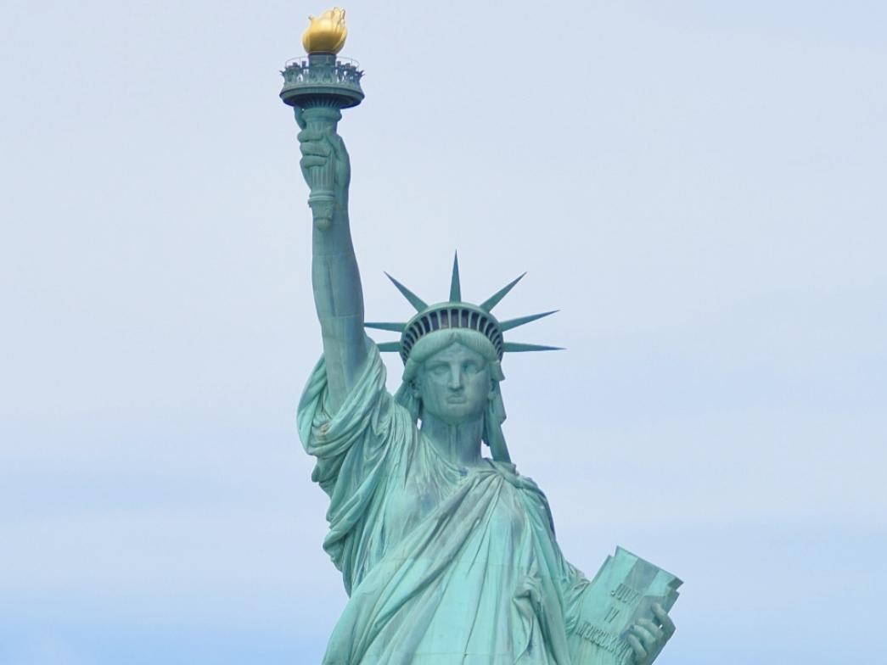
Regalo de Francia a EE.UU. (1886). El ferry a Liberty Island/Ellis Island sale de Battery Park; hay que reservar boleto con anticipación, sobre todo en temporada alta.
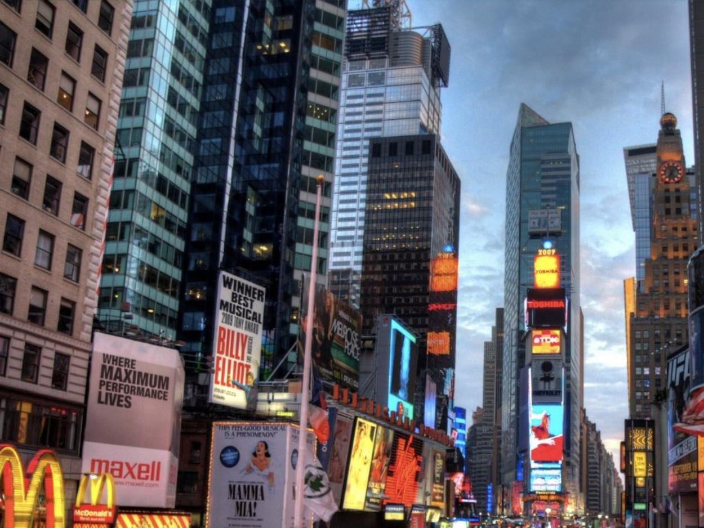
La intersección de Broadway y la Séptima Avenida, pura pantalla y luces 24/7. Es el corazón del distrito de teatros (Broadway).
340 hectáreas en pleno Manhattan, el parque urbano más visitado de EE.UU. En diciembre, con algo de suerte, cae nieve y se ve espectacular.
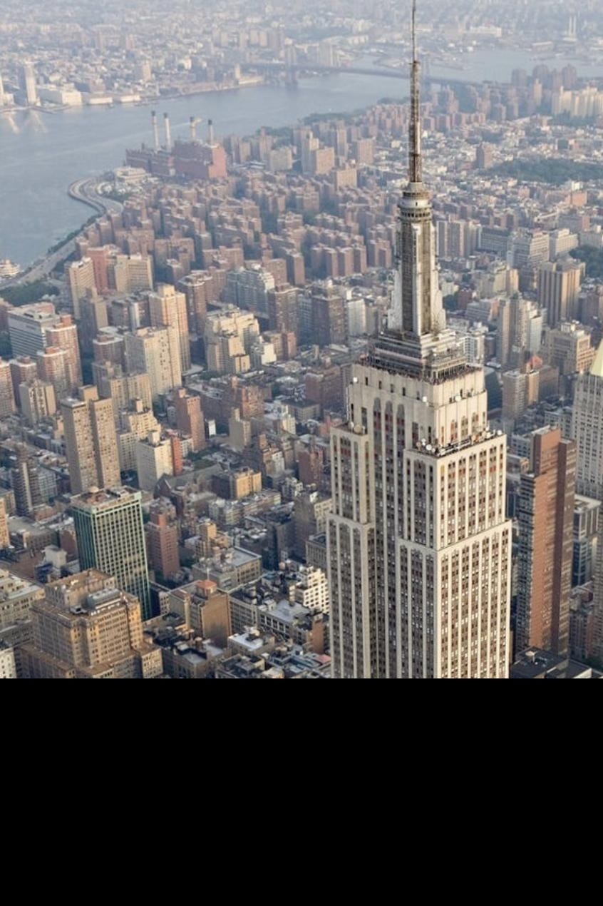
102 pisos, mirador icónico con vista 360° de Manhattan. Alternativas con vista similar o mejor: Top of the Rock (incluye la vista con el Empire State en el marco) y One World Observatory.
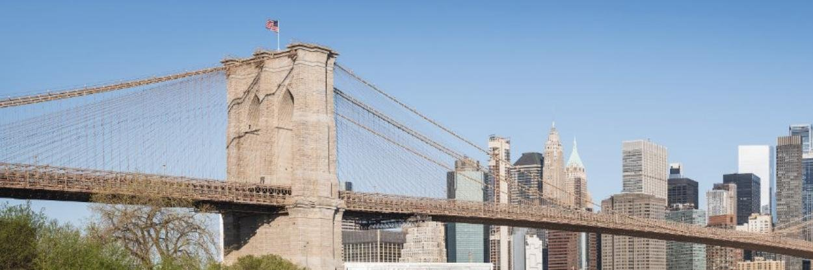
Cruzarlo a pie desde Manhattan hasta Brooklyn (o al revés) es una de las mejores caminatas gratis de la ciudad — 25-30 min, vista completa del skyline y del East River.
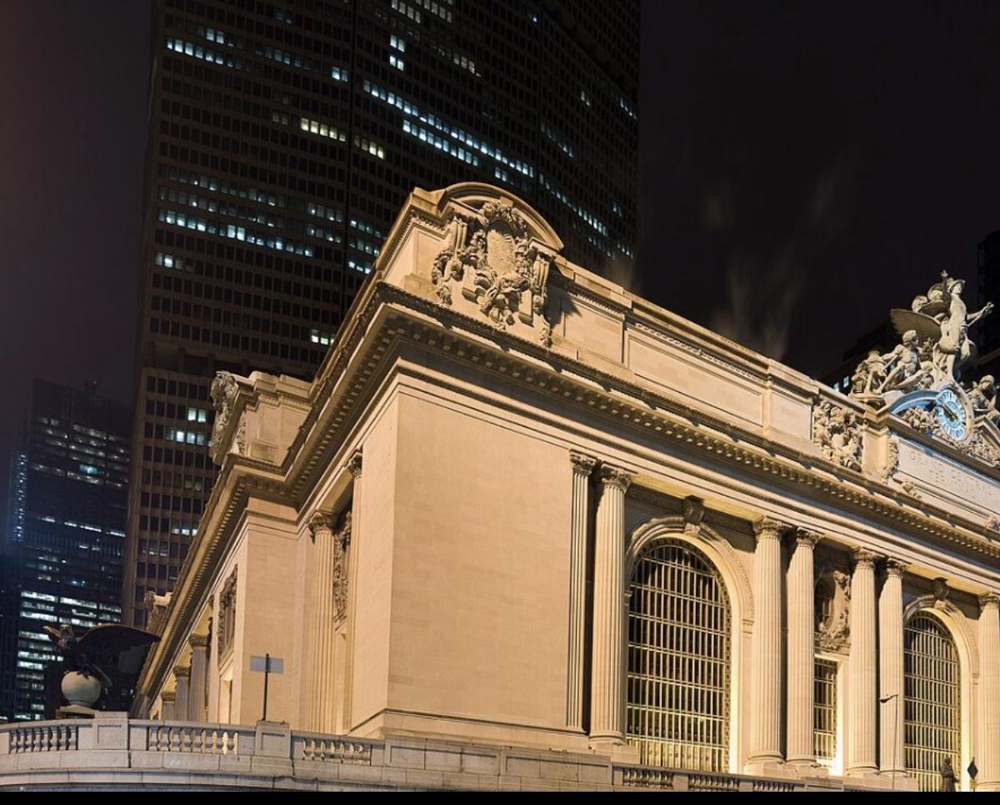
Estación de tren de 1913, Beaux-Arts, con el techo pintado de constelaciones en el salón principal. Se puede visitar sin tomar ningún tren.
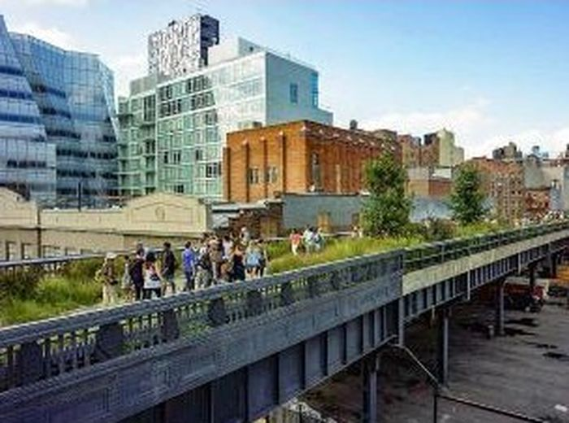
Parque elevado de 2.3 km construido sobre una vía de tren de carga abandonada. Corre por Chelsea y el Meatpacking District, buena forma de caminar sin tráfico.
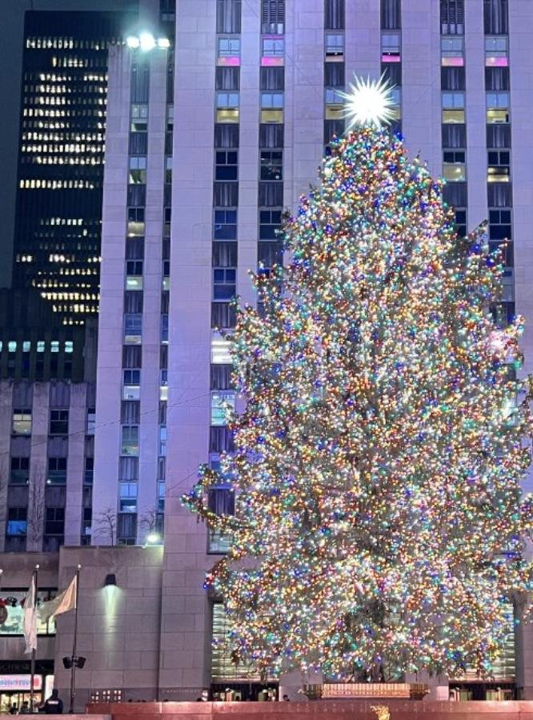
El árbol de Navidad más famoso de EE.UU., un abeto de 20-30 metros con miles de luces LED, junto a la pista de hielo y la estatua dorada de Prometeo.
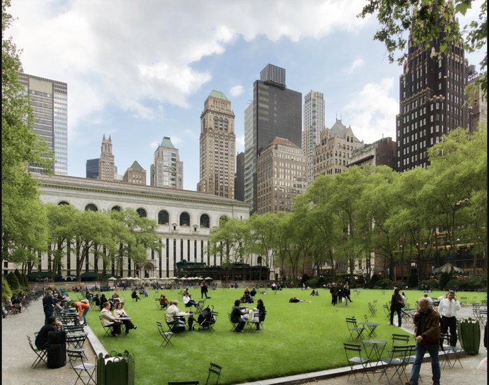
Mercado navideño con casetas de artesanías/comida alrededor de una pista de hielo, justo detrás de la Biblioteca Pública de NY (Bryant Park).
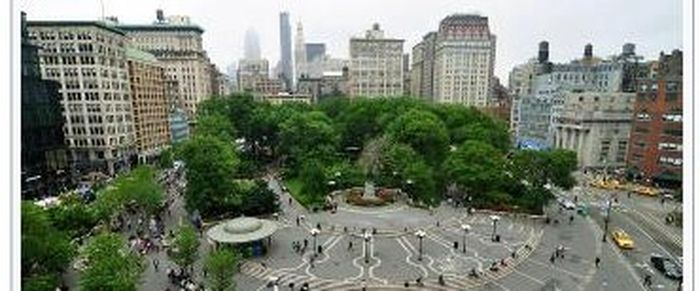
Otro mercado navideño clásico de la ciudad, con más de 150 casetas de artesanos locales — buena opción para regalos hechos a mano.
Macy's en Herald Square monta cada año vitrinas animadas de temática navideña en su fachada — tradición desde hace décadas. Varias tiendas de la Quinta Avenida (Saks, Bergdorf Goodman) también decoran sus vitrinas en diciembre.
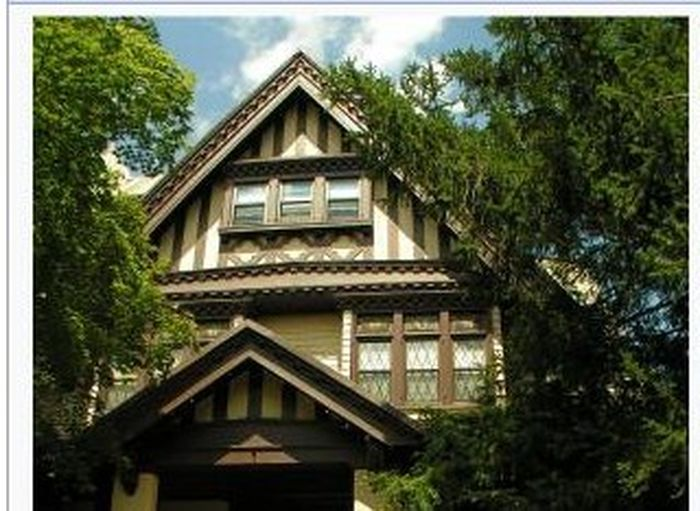
Barrio residencial en Brooklyn donde varias casas se decoran de forma exageradamente elaborada en diciembre (luces, inflables, hasta animatronics) — es una tradición del vecindario, no un evento oficial.
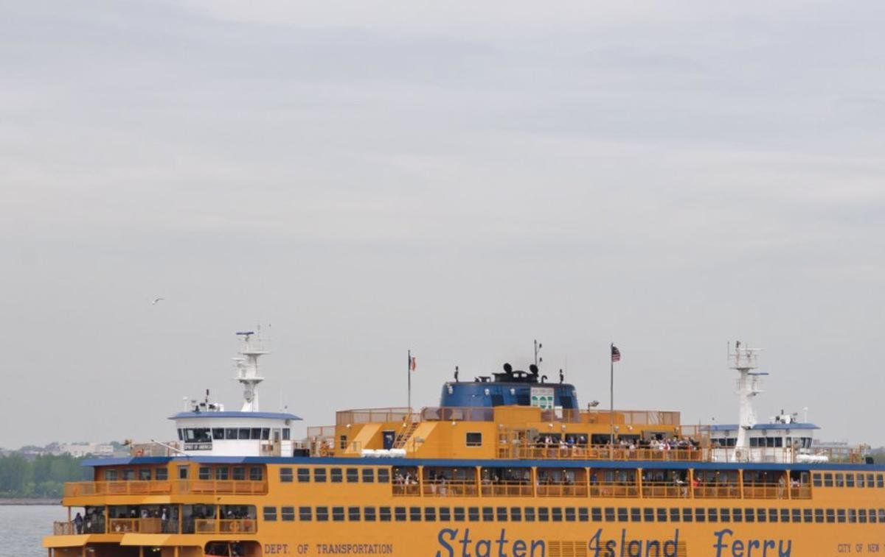
Ferry público que cruza la bahía de Nueva York entre Manhattan y Staten Island, las 24 horas. Pasa muy cerca de la Estatua de la Libertad — es la mejor vista gratuita de la estatua y del skyline que existe.
Ver descripción completa en Imperdibles — gratis, ~25-30 min caminando, una de las mejores vistas de la ciudad.
Entrada libre todo el año, sin horario de reserva. Ver descripción completa en Imperdibles.
Entrar y caminar por el parque nunca cuesta nada (solo pagan cosas puntuales como el bote de remos o la pista de hielo).
Visitar la estación y ver el techo de constelaciones no cuesta nada — ver descripción completa en Imperdibles.
El MoMA ofrece entrada gratuita los viernes por la tarde (patrocinado por UNIQLO), normalmente de 5:30 pm a 8:30 pm.
Plaza con el arco icónico en el Greenwich Village, ambiente universitario (NYU está al lado), casi siempre hay músicos callejeros tocando.
El parque tiene 3.41 km² — el país de Mónaco entero mide unos 2.1 km². Fue el primer parque diseñado como tal en EE.UU. (1858).
El subway de Nueva York opera 24 horas, los 7 días de la semana — a diferencia de casi todos los demás sistemas de metro del mundo, que cierran de madrugada.
El mural de constelaciones del salón principal representa el cielo visto desde fuera de la esfera celeste, no desde la Tierra — un error del pintor original (o una elección deliberada, según la versión) que nunca se corrigió.
Cuando se inauguró en 1886 tenía el color brillante del cobre pulido. El verde actual (pátina) se formó con décadas de oxidación natural del metal por el clima.
El artista Arturo Di Modica instaló el "Charging Bull" ilegalmente, de madrugada, en diciembre de 1989, como regalo sorpresa para la ciudad después del crash bursátil de 1987. La policía lo confiscó y, por presión popular, terminó reinstalado a pocas cuadras.
Se llamaba Longacre Square hasta 1904, cuando el periódico The New York Times mudó su sede ahí y la ciudad renombró la plaza en su honor.
Se construyó en los años 1930 para sacar los trenes de carga de las calles (antes atropellaban peatones a nivel de calle). Se abandonó en los 80 y se reconvirtió en parque entre 2009 y 2014.
La bola que baja en Nochevieja pesa cerca de 5,400 kg y está cubierta con más de 2,600 triángulos de cristal Waterford — se usa desde 1907, con rediseños a lo largo de los años.